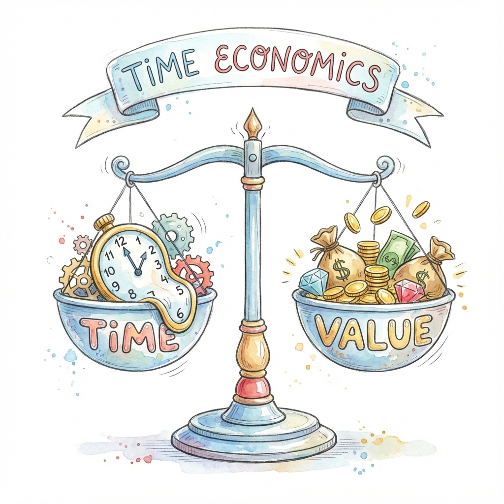

練習「選擇」的
點數存摺系統
在這個處處都是「現在就要」的時代，Points Bank 為孩子打造一個安全的練習場：今天把螢幕時間「存起來」，換取明天更大的快樂。透過延遲滿足的練習，讓孩子學會規劃、學會等待、學會為自己的選擇負責。
開啟家庭入口
為選擇「有原則的開放」
的家庭而設計
每個家庭對數位設備的態度都不同，我們尊重所有選擇。但有越來越多的現代家長認為：完全禁止不是唯一解答。
根據美國兒科醫學會 (AAP) 指引，重點在於內容品質與使用平衡。Points Bank 專為那些相信「管理比禁止更重要」的父母打造——將抽象的「自律」轉化為孩子看得見、玩得懂的遊戲規則。
核心教養邏輯
「今天先不玩，時間存起來換更棒的東西」。
核心是延遲滿足的訓練，而非把日常責任變成交易。
為什麼我們強調
「有原則」的自由？

「最珍貴的時刻，是當孩子發現點數不足時——拒絕他的不再是爸媽，而是『沒有存夠』的客觀事實。」
把「可不可以」變成
「帳本上有多少」
「媽媽我可以玩遊戲嗎？」對話從此不再是權力鬥爭，而是查帳本、做決定。這種「現實感」能有效降低親子衝突，讓孩子深刻理解因果關係：現在的匱乏，來自過去的消費選擇。與其哭鬧，不如調整策略，開始為了目標認真存下每一點。
為什麼不建議用
「做家事」賺點數？
我們深信「日常責任不該被交易」。寫作業、做家事是家庭成員的本分，若凡事都用點數交換，恐會削弱孩子的內在責任感。因此，系統核心設計為用「省下的螢幕時間」換點數，專注於訓練自我克制。
當然，教養沒有標準答案。您最了解孩子的氣質，系統保留了完全的彈性，讓您能依照家庭價值觀與孩子的特性，自由決定最適合的獎勵平衡點。
核心訓練：
延遲滿足，而非交易
我們深知外在獎勵的風險，因此 Points Bank 不走「做 X 得 Y」的交易模式，而是專注於訓練延遲滿足。孩子每天面臨選擇：「要現在玩掉，還是存起來換更大的獎勵？」這就是最好的大腦前額葉訓練場。Points Bank 是一個可視化的輔助輪，幫助孩子將抽象的自制力具象化，最終內化為受用一生的能力。
爸媽不會「不同調」的秘密
「媽媽說我還有 20 點，但爸爸說我已經用完了⋯⋯」雲端即時同步的設計，讓全家人看到的數字永遠一致。不管是爸爸用手機記、媽媽用平板查，系統 0.5 秒內就對齊。孩子學到的是：規則是穩定的、可預測的，而不是「看今天誰心情好」。
貼心、方便、符合教養守則的系統功能
不只是理念，更是每個細節都為家庭精心設計的實用工具
平日/假日彈性配額
平日功課多、週末該放鬆？系統支援「平日上限」與「假日上限」分開設定。例如：平日 50 分鐘、假日 90 分鐘，自動識別，不用每天手動改。
點數多元兌換
點數不只換螢幕時間！可自訂「點數→分鐘」和「點數→零用錢」的匯率。讓孩子學會在不同需求間取捨：要換遊戲時間，還是存錢買玩具？
完整歷史軌跡
每一次的加點、扣點、兌換都有詳細紀錄。系統甚至會生成簡單的統計，讓您在家庭會議時有據可查：「你看，上週我們多存了 100 點喔！」
批次快速調整
多個孩子一起大掃除？可勾選多人、一次性調整點數。支援自訂理由，讓每次調整都有清楚的脈絡可循。
雙主題風格切換
提供「Cyber 霓虹」和「Warm 手繪」兩種視覺風格，讓每個家庭選擇喜歡的介面。切換即時生效，全家裝置同步。
⚡ 更多貼心細節
體驗讓存摺代替碎念
試試看「發放時間額度」或手動增減點數。
觀察看看：當規則透明時，孩子的帳戶會發生什麼變化？
預覽儀表板
💡 體驗提示：這是一個部分仿真的功能Demo，數據僅保存在您的瀏覽器中。 開啟真實系統入口 →